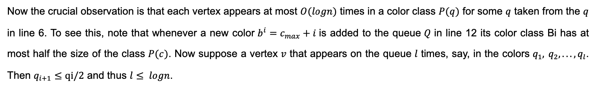

Learn Weisfeiler-Lehman Algorithm and Color Refinement Algorithm in your browser!
1. Graphs
1.1 Graph
The most fundamental part of GNN is a Graph. In Computer Science, a graph is a data structure consisting of two components, vertices (also called nodes), and edges. A graph G can be defined as G = (V, E), where V is the set of nodes, and E are the edges between them. Edges can be either directed or undirected, depending on whether there exist directional dependencies between vertices.Figure 1.1 Directed Graph
1.2 GNNs
Graph Neural Networks (GNNs) are a class of deep learning methods designed to perform inference on data described by graphs. The key design element of GNNs is the use of pairwise message passing, such that graph nodes iteratively update their representations by exchanging information with their neighbors. GNNs are neural networks that can easily perform node-level, edge-level, and graph-level prediction tasks since they can be applied directly to graphs. GNNs can do what Convolutional Neural Networks (CNNs) failed to do. More GNNs related resources can be found: https://en.wikipedia.org/wiki/Graph_neural_network2. Graph-isomorphism
2.1 What is graph-isomorphism?
Definition: In graph theory, an isomorphism of graphs G and H is a bijection between the vertex sets of G and H. If G=(V, E) and H=(V1, E1) are two graphs, G and H are isomorphic if there is a bijection m: V→V1, such that x exists for all x and y∈V, and y∈E is equivalent to m(x)m(y)∈E1. In simple terms, if graphs G and H have the same number of vertices, edges, and edge connectivity, then they have been shown to be isomorphic. In another word, points in G can also be thought of as being mapped from points in H.2.2 An example of graph-isomorphism
The following two graphs shown below are isomorphic (From Wikipedia), despite their different looking drawings. Figure 2.1 Example of graph-isomorphism In the analysis of social network, protein, gene network, etc., the similarity between each other is usually considered. Because molecules with similar structures may have similar functional properties, measuring graph similarity is a core problem in graph learning. At present, the graph isomorphism problem is usually considered as a non-deterministic polynomial problem. The most efficient algorithm is the Weisfeiler-Lehman algorithm, which can be solved in quasi-polynomial time. The website focuses on the algorithm itself, there is no more detailed description for graph-isomorphism. If you're interested in it, Wikipedia provides a detailed explanation of graph isomorphism: https://en.wikipedia.org/wiki/Graph_isomorphism3. Weisfeiler-Lehman (WL) algorithm
After understanding the preliminary knowledge, we move on to the study of this algorithm.3.1 Background
As a new graph data learning technology, graph neural network (GNN) has attracted extensive attention. Although GNN has achieved experimental success in many fields, Xu et al., Morris et al., pointed out that GNN cannot distinguish some graph pairs, such as graph isomorphism mentioned above. WL algorithm is an algorithm used to solve graph isomorphism problem. In order to make a revolutionary innovation in the design of graph neural network, it is inevitable to conduct a comprehensive and in-depth study on the essence of graph theory.3. Weisfeiler-Lehman (WL) algorithm
After understanding the preliminary knowledge, we move on to the study of this algorithm.3.2 What is Weisfeiler-Lehman algorithm?
Weisfeiler-Lehman algorithm, proposed in 1968, is an important algorithm in graph theory, which is used to solve graph isomorphism problem. It is a way to check isomorphism, and on most graphs, you get a unique set of features, which means that each node on the graph has a unique role (the exceptions are grids, chains, and so on). Therefore, for most irregular graph structures, the features obtained can be used as the basis for determining whether graphs are isomorphic, namely WL Test (for example, whether two graphs are homogenous depends on the arrangement of nodes). There are many variations of the WL algorithm, one of which is the 1-dimensional WL (also known as "Color Refinement") algorithm, which is the most commonly used variant and the focus of our study. The following chapter discusses the detailed definition and explanation of 1-WL algorithm. Then we describe the k-WL algorithm in short.4. Color Refinement (CR) Algorithm
In the previous section, we mentioned the color refinement algorithm, which is a 1-dimensional variant of the WL algorithm. Now let's focus on the algorithm!4.1 What is Color Refinement Algorithm??
Color Refinement (CR) is a combinatorial algorithm, also known as naive vertex classification and 1-dimensional Weisfeiler-Leman algorithm, that aims to classify vertices of graphs by similarity. Let's start with the following example to understand what CRA does. This example is an interactive visual implementation of the CR algorithm. How does the CR algorithm work? In short, it assigns a label (color) to each node, aggregates information about neighboring nodes, and modifies the color of the node until the color no longer changes (convergence). Specifically, the identical color is applied to each vertex. Then, any two vertices v and w that still have the same color will get different colors in each round of refinement if there is some color c such that v and w have different numbers of color c neighbors; otherwise, they will remain the same color. Thus, after the first round of refinement, two vertices only share the same color if and only if they have the same number of related edges. After the second round of refinement, they have the same color if and only if they have the same number of neighbors every k times. The refinement procedure continues until stable coloring (all pairs of vertices with the same label before refinement still have the same label after thinning) occurs.4.2 Explanation of Color Refinement Algorithm
 Figure 4.1 Pseudocode of CR Algorithm4.3 Variants of CR algorithm
Color refinement has several interesting variants, including a hierarchy of algorithms known as the Weisfeiler-Leman algorithm(s), and generalizations to other structures such as vertex- and edge-colored graphs, directed graphs and arbitrary relational structures, weighted graphs and even matrices. Many of these variations are needed in the applications of color refinement. The simplest extension of color refinement is the one to vertex-colored graphs: instead of starting the refinement procedure from the coloring that assigns the same color to all vertices, we start from the given vertex coloring. The extension to graphs that (also) have colored edges is not much harder; all we need to do in the refinement step is to consider the degrees with respect to different edge colors separately. Thus in a refinement round, two vertices v, w that still have the same color get different colors if there is some edge-color e and some color c of the current vertex-coloring such that v and w have a different number edges of color e into the color class c. To extend color refinement to directed graphs, we consider in-degrees and out-degrees separately.4.4 Application 1: Graph isomorphism testing
4.4.1 Weisfeiler-Lehman test
The most used application of color refinement is graph isomorphism testing, also known as Weisfeiler-Lehman test (WL test). WL test can be used for most irregular graph structures, and the feature set can be used as the criterion to assess whether the graph is isomorphic or not. In fact, Babai, Erdos, and Selkow demonstrated that almost all non-isomorphic graphs can be distinguished by color refinement. When determining whether Graph G and Graph G’ are isomorphic, we can run color refinement on disjoint union G and G’. The key idea of the algorithm is to augment the node labels by the sorted set of node labels of neighbouring nodes, and compress these augmented labels into new, short labels. These steps are then repeated until the node label sets of G and G^’ differ, or the number of iterations reaches n. See Figure 2, a-d, for an illustration of these steps (note however, that the two graphs in the figure would directly be identified as non-isomorphic by the Weisfeiler-Lehman test, as their label sets are already different in the beginning). Sorting the set of multisets allows for a straightforward definition and implementation of f for the compression of labels in step 4: one keeps a counter variable for f that records the number of distinct strings that f has compressed before. f assigns the current value of this counter to a string if an identical string has been compressed before, but when one encounters a new string, one increments the counter by one and f assigns its value to the new string. The sorted order of the set of multisets guarantees that all identical strings are mapped to the same number, because they occur in a consecutive block. However, note that the sorting of the set of multisets is not required for defining f. Any other injective mapping will give equivalent results. The alphabet Σ has to be sufficiently large for f to be injective. For two graphs, |Σ| = 2n suffices. The Weisfeiler-Lehman algorithm terminates after step 4 of iteration i if {l_i (v)|v ∈V} ≠ {l_i (v')|v' ∈ V'}, that is, if the sets of newly created labels are not identical in G and G^’. The graphs are then not isomorphic. If the sets are identical after n iterations, it means that either G and G^’ are isomorphic, or the algorithm has not been able to determine that they are not isomorphic, for examples of graphs still debatable (possibly isomorphic, possibly not). by this algorithm or its higher dimensional variants. Figure 4.2 & Figure 4.3: Illustration of the computation of the Weisfeiler-Lehman subtree kernel with h=1 for two graphs. Here {1,2,…,13}∈Σ are considered as letters. Note that compressed labels denote subtree patterns: For instance, if a node has label 8, this means that there is a subtree pattern of height 1 rooted at this node, where the root has label 2 and its neighbours have labels 3 and 5. As a side note: Figure 4.4: Two non-isomorphic graphs (Dechnaphthalene and dicyclopentyl in chemistry) Obviously, color refinement assigns the same color to all vertices, but the two graphs are not isomorphic. Therefore, color refinement cannot distinguish between any two regular graphs of the same degree (each vertex has the same degree).Label Compression:
def compress(self, g):
labels = []
# new_labels = [v[MULTISET] for v in g.vs]
labels = [v[CURRENT_LABEL_STR] for v in g.vs]
labels.sort()
for s in labels:
fs = -1
if s not in self.HASH:
currentIndex = self.HASH['index']
newIndex = str(int(currentIndex) + 1)
self.HASH['index'] = newIndex
fs = newIndex
self.HASH[s] = fs
# relabelling
for v in g.vs:
v[PREV_LABEL] = self.HASH[v[CURRENT_LABEL_STR]]
g.set_of_newly_created_labels = set([v[PREV_LABEL] for v in g.vs])
return g
Generate Label:
def generate_labels(g):
for v in g.vs:
v[MULTISET] = []
for nv in v.neighbors():
v[MULTISET].append(nv[PREV_LABEL])
v[MULTISET].sort()
def generate_string_labels(g):
for v in g.vs:
concatString = ""
for each in v[MULTISET]:
concatString = concatString + str(each)
v[CURRENT_LABEL_STR] = str(v[PREV_LABEL]) + concatString
Input:
Output (Labelled):
Iter#1: Labels mismatch
Is it graph-isomorphic? False
4.5 Application 2: The design of graph kernels based on color refinement
4.5.1 Introduction of Graph Kernel
There are several applications for graph structure data, including social networks, protein or gene regulatory networks, chemical structures, protein structures and so on. Structural similarity is frequently considered as a requirement or presumption when solving graph structure-related problems. Therefore, the problem of graph similarity metric is the core of learning on graphs. Graph kernels have recently evolved into a popular branch of structured data learning. Kernelized learning algorithms such as support vector machines work directly on graphs, without having to do feature extraction to transform them to fixed-length, real-valued feature vectors. An example of a kernel between graphs is the random walk kernel, which conceptually performs random walks on two graphs simultaneously, then counts the number of paths that were produced by both walks. This is equivalent to doing random walks on the direct product of the pair of graphs, and from this, a kernel can be derived that can be efficiently computed. Another example is the Weisfeiler-Lehman graph kernel which computes multiple rounds of the Weisfeiler-Lehman algorithm and then computes the similarity of two graphs as the inner product of the histogram vectors of both graphs. In those histogram vectors the kernel collects the number of times a color occurs in the graph in every iteration. Note that the Weisfeiler-Lehman kernel in theory has an infinite dimension as the number of possible colors assigned by the Weisfeiler-Lehman algorithm is infinite. By restricting to the colors that occur in both graphs, the computation is still feasible. The performance for different graph kernels can be shown on the following chart. As we can see from the chart, current kernel methods suffer from two rather obvious drawbacks: long running time and unfriendliness to overly large data. Color refinement and Weisfeiler-Leman graph kernels excel in both areas. Figure 4.5: The performance for different graph kernels Here we focus on Weisfeiler-Lehman graph kernel with detailed description.4.5.2 Weisfeiler-Lehman graph kernel
Figure 4.6: The computation of the implicit feature vectors of two graphs G (left) and G^'(right) in the Weisfeiler-Leman Graph Kernel. The figure also shows the histograms of colors that appear in the two graphs highlighting their similarity. Experiments show that the information collected by the kernel is sufficient to adequately perform desired classification tasks [ref1]. These experiments also indicate that choosing the number of iterations as h≈5 is best. Indeed, since almost all graphs are distinguished by color refinement, performing too many iterations means that the colors contain too much (global) information about the graphs they are situated in and cannot be used as a meaningful measure of similarity. (In fact, two graphs will most likely not share any vertices of the same color if the number of rounds is too large.) As with the other applications for color refinement, a major advantage of the methods is its running time. Since an iteration of color refinement can be performed in time O(m), to compute the Weisfeiler-Leman Graph Kernel that uses h iterations on a pair of graphs on m edges, we require time O(mh). However, in applications, we intend to apply the kernel between all pairs of graphs coming from a large set of examples, of size N say. A crucial observation is that instead of performing color refinement on the disjoint union of the two graphs we can also perform it separately on each graph. Doing so, we cannot simply rename the new arising colors, since this might be inconsistent between graphs. However, using a suitable hash function we can remedy the situation. We obtain a running time of O(Nhm + N^2 hn) to compute the kernels between every pair of graphs from a set of size N. Here the rst summand arises from color refinement on N graphs, while the second summand is the computation of the scalar product for each of the N^2 pairs of graphs. There are many examples of Weisfeiler-Leman Graph Kernel. This website is not going to go into detail on this section. Commonly used are the Ramon-Gartner Subtree Kernels, the Weisfeiler-Lehman Edge Kernel, the Weisfeiler-Lehman Shortest Path Kernel. If you are interested, look at here: - https://arxiv.org/pdf/2005.08887.pdf - https://arxiv.org/pdf/2005.08887.pdf4.6 Application 3: A logical characterization of color refinement